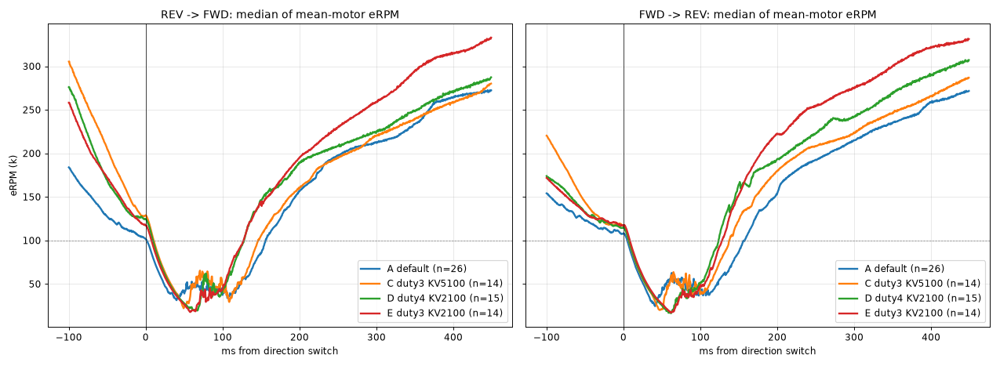
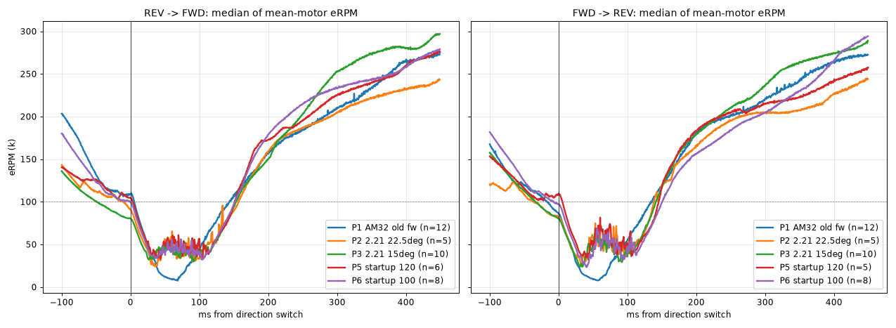

Min duty and KV slider tests on a 3D whoop, following your suggested plan: default, then min duty 3, then KV halved, then min duty 4 with KV ~2200 (flown at 2100). Plus the earlier logs comparing factory firmware, 22.5° timing and startup power 120.
Same Betaflight config for every run; B–D on the same day with the same props. Times are from the moment Betaflight flips direction until each motor reaches 100k eRPM in the new direction; medians over clean reversals (no second flip within 450 ms). Impacts trimmed out.
| Config | Reversals | Switch median | Switch p90 | Restart phase (min → 100k) | Slow >200 ms | Motor spread | Low-rpm ripple | Attitude kick med / p90 |
|---|---|---|---|---|---|---|---|---|
| A · default (min duty 0.5, KV 10220) | 52 | 153 ms | 183 ms | 45 ms | 17 (33%) | 70 ms | 3.3k | 60 / 136 °/s |
| B · min duty 3 | 23 | 147 ms | 172 ms | 42 ms | 1 (4%) | 49 ms | 1.8k | 85 / 173 °/s |
| C · min duty 3 + KV 5100 | 28 | 142 ms | 172 ms | 39 ms | 1 (4%) | 45 ms | 3.5k | 68 / 172 °/s |
| D · min duty 4 + KV 2100 | 30 | 126 ms | 154 ms | 37 ms | 2 (7%) | 38 ms | 1.7k | 82 / 149 °/s |
| E · min duty 3 + KV 2100 (kept) | 28 | 126 ms | 148 ms | 36 ms | 1 (4%) | 34 ms | 1.8k | 84 / 185 °/s |
| Per-motor median switch (BF m0 / m1 / m2 / m3) | m0 | m1 | m2 | m3 |
|---|---|---|---|---|
| A · default | 152 | 147 | 156 | 155 |
| B · min duty 3 | 143 | 149 | 146 | 154 |
| C · min duty 3 + KV 5100 | 139 | 135 | 139 | 149 |
| D · min duty 4 + KV 2100 | 125 | 128 | 126 | 130 |
| E · min duty 3 + KV 2100 | 118 | 128 | 123 | 129 |
Low-rpm ripple = RMS of 20–200 Hz eRPM ripple while a motor runs between 5k and 150k eRPM, away from reversals. A pools two days of default flying (3 packs). Attitude kick = peak roll/pitch tracking error in the 300 ms after a switch.

| Log | Reversals | Switch median | Switch p90 | Stop phase | Motor spread |
|---|---|---|---|---|---|
| Factory AM32 (2.03), timing 15° | 24 | 136 ms | 169 ms | 68 ms | 37 ms |
| 2.21, timing 22.5° (reset by the update) | 10 | 140 ms | 168 ms | 88 ms | 49 ms |
| 2.21, timing 15° | 20 | 146 ms | 175 ms | 91 ms | 37 ms |
| 2.21, startup power 120 | 11 | 144 ms | 162 ms | 98 ms | 56 ms |
| 2.21, startup power 100 (default) | 16 | 148 ms | 177 ms | 97 ms | 62 ms |
Stop phase = switch → eRPM minimum. On 2.21 the stop phase is ~30 ms longer than on factory firmware; the restart phase is actually a little shorter on 2.21. Factory log caveats: Betaflight idle was 2.8% and the Betaflight tune was untuned (first flight).

Min duty adds on top of the Betaflight idle. At the same dshot_idle_value (4%), idle speed rose from roughly 70–79k (A) to 87–93k (B) and 85–101k (D) eRPM. Center stick floats a bit more as a result.
KV 5100 alone cost smoothness; KV 2100 + min duty 4 didn't. C's ripple went back to default levels, D's is the lowest of any run.
Flight side effect in D: pitch overshoot rose a little (step peak 1.22 → 1.37). Back at min duty 3 (E) it returned to 1.22, and inverted motor jitter dropped (19 → 17).
D vs E is close enough that the pilot couldn't pick one by feel; the logs agree. Same switch speed and smoothness, E slightly more consistent.
No desyncs or failed restarts in A–E.
Right after the AM32 update (which silently changed timing 15° → 22.5°), BF motor 0 (ESC M1) went to 0 eRPM after a REV → FWD switch at ~37.1 s and stayed there for 0.75 s while Betaflight commanded 2047, then the quad crashed. Stuck rotor protection was ON. The other three motors restarted normally. No repeat since going back to 15°.
File 02, log 4 of 5.
| File | What to look at |
|---|---|
| 01_AM32-factory-2.03_… | Factory reference. AM32 still had poles set to 14. |
| 02_AM32-2.21_timing22.5-…_STALL-in-log4 | 5 logs. Log 4 = failed restart at ~37.1 s. Log 1 end = prop came off (not ESC). Log 5 = clean flight. |
| 03_…_startup120_… | Tree hit at 55.8 s. |
| 04_…_DEFAULT-A1 | Log 4 is the flight (106 s, clean). |
| 05_…_DEFAULT-A2 | 2 packs. Impact at 70.0 s in log 1; log 2 truncated (flash full). |
| 06_…_minduty3_kv10220_TEST-B | Log 3 is the flight; impact at 79 s. |
| 07_…_minduty3_kv5100_TEST-C | Crash at 88.6 s. |
| 08_…_minduty4_kv2100_TEST-D | Clean 86 s flight, no impacts. |
| 09_…_minduty3_kv2100_TEST-E | Clean 94 s flight, no impacts. Final setting. |